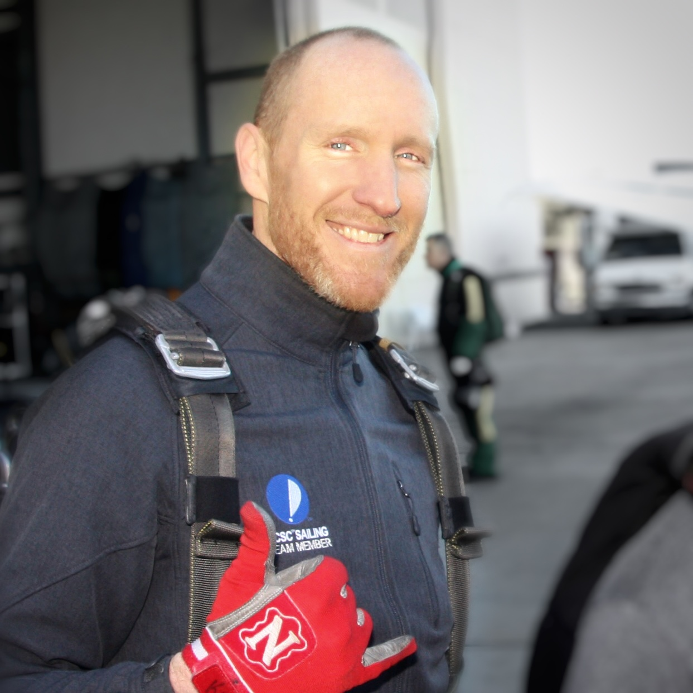

I was a sailor, an educator, a runner, and a compulsive habit maker. In 2015 I decided I wanted to learn programming. So I set about the task of learning everything I could get my hands on about making these little machines go beep.
First, I started by working along the Free Code Camp Front-End track and various Codecademy courses. Then I started going to programming meetups. One day I learned about the Telegraph Academy prep course. It was like night school for web development. For 6 weeks, 4 nights a week I learned how to use JavaScript. When I finished that, I came back as a teaching assistant to help the new cohort of students through their work because there is nothing — absolutely nothing — half so much worth doing as helping others find their way to their own "ah-ha!" moments.
I also love how much I learn in the process. It’s unavoidable. I love it so much I started my own teaching experiment. My mission: find a few students who were new to programming that wanted to spend some time learning with me. I would design and build out the daily curriculum and jump in to help get them unstuck as needed. It would all be remote. It would all be free. And for me, a relatively new programmer myself, it would be totally terrifying. With the gentle encouragement and guidance of one remarkable friend, it became all of these things. But it also became relentlessly satisfying. For 30 days I led a group of 4-6 students through an intro crash course in computer science and javascript programming. It was called the Cirrus Collective. Looking back now I don’t know how I did it, but I do know why.
Then, several months ago, that same remarkable friend connected me with Larry. Larry was at a similar point in his coding journey and was as willing to throw as many hours at it as I was. Soon, Larry and I were stumbling, hacking, and bashing (our heads against the wall) together for hours everyday. Day in and day out since August ’16 we would put in 6-10 hour days. We’ve learned about data structures. We’ve crunched loads of algorithms. We’ve learned about HTTP requests and encodings and we’ve built servers to handle them using Node and Express. We’ve learned more JavaScript and implemented frameworks like jQuery, Angular, React and are currently chowing down on React Native. Those are the source links to a pet project but please, avert your eyes from these abominations that have staggered from the labs of inept madmen.
We’ve built out backends with Node and Postgres, but we’ve recently discovered Firebase and really like that. We are writing tidier, more potent code with ES6. We’re making prettier UIs faster and easier with Flexbox. We’ve learned how to speed things up by sweeping up the critical rendering path. We’ve learned to better manage our versioning messes via git and GitHub. We’ve made our homes at the command line and MDN, and in Atom and Chrome dev tools. We’ve learned a lot about autonomy and how to build software and how to work remotely with someone we’ve never met, because Larry lives in Brooklyn.
But mostly we’ve learned a lot about how to learn.
Here is something we designed and built:
Positive Balance
I’m obsessed with habit and behavior tracking and modification. There are really good apps out there for this. There are running apps. There are nutrition apps. There are To Do apps. There are meditation apps. There are walking trackers. These all go into amazing detail for their particular activity. But what if someone wanted a more general sense of how they were doing across multiple, disparate activities?How does one measure, say, drinking with meditation or meditation with running? I wanted a single, useful value at the end of each day that summed up the behaviors I’m interested in, both those I want to do more of and those I want to do less of. That’s how Positive Balance was born and it became the guinea pig for learning a load of new technologies. First jQuery, then Angular, then React. It taught us a lot about software design, specifications, and an awful lot about learning curves and timelines!